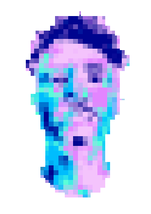

ABOUT ME

patrick
Hey. My name’s Patrick!
I'm interested in feature tooling, graphics, and image processing. Love learning about the creative and technical trickery involved in implementing effects. Lots of cool stuff.
Here are some things I’ve made!
I'm interested in feature tooling, graphics, and image processing. Love learning about the creative and technical trickery involved in implementing effects. Lots of cool stuff.
Here are some things I’ve made!
PROJECTS
stabilize
renderering
ue4
pixel sort
seam carve
blender